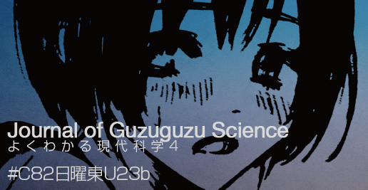

コミックマーケット82で本を出します
出します．何も訊かずに買ってください．
よくわかる現代科学4は，オリジナル・メンバー3人にゲストとして @T_Hash 氏, @icgy 氏を加え，計5.00人(99.99% accuracy)の理系男子による Journal of Guzuguzu Science をお送りします．中身はいつも通りドラッグにもレメディにもならないヨミモノですが，今回は天文学・有機化学・遺伝学・生物工学・情報学，それぞれの専攻気取りによる論文紛いを集めたサイエンスジャーナルです．数値では表せないインパクトファクターにご期待ください．三日目の日曜日，東U23bです．
「表紙だけくれ」で毎度お馴染みの弊サークル発行誌，今回もカバーイラストを描いてくださったのは @Sano_Ryoko 様です．頒布価格は500円．図書館のサイエンスジャーナルの棚にこっそり置いたりしてお楽しみください．
なんとしても手に入れたいという危篤な方へ
お取り置き致しますので，こちらのフォームをご利用ください．
お取り置きフォームによるお取り置きオーダーは 当日，コミケ会場でのお渡しのみ となります．「コミケなんか行きたくもないがお前らの本は買ってやってもいい」という素敵な方は最近傍のtwitter idまで上から目線の@でご連絡ください．